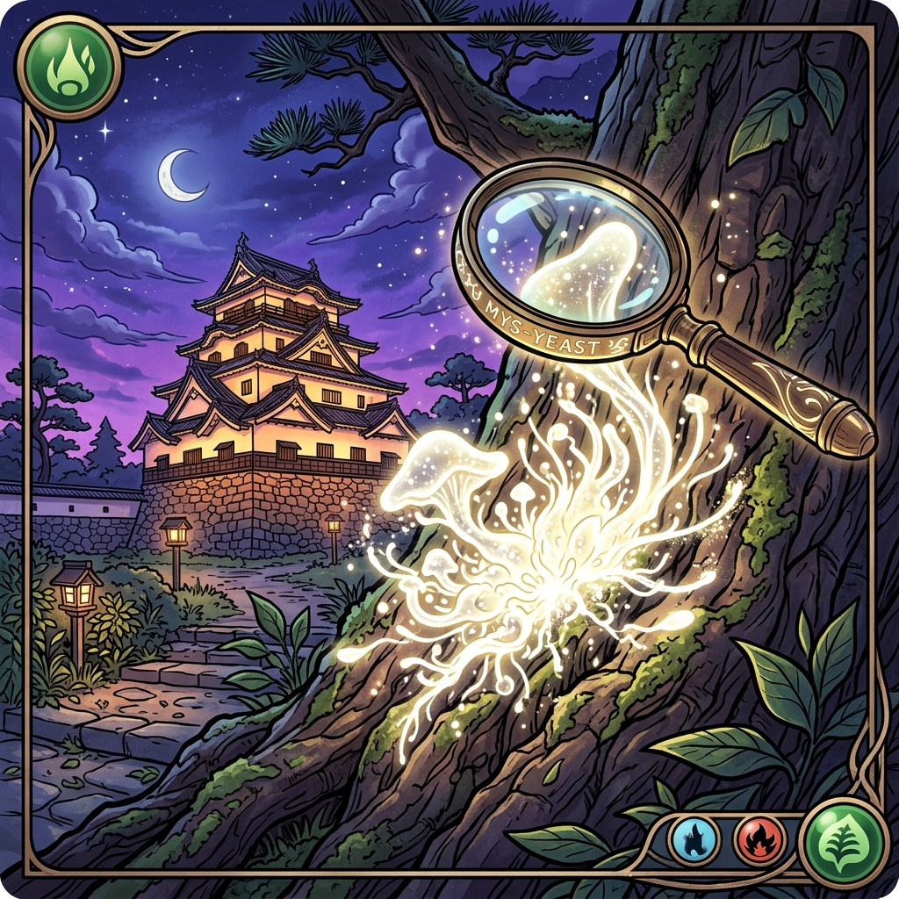
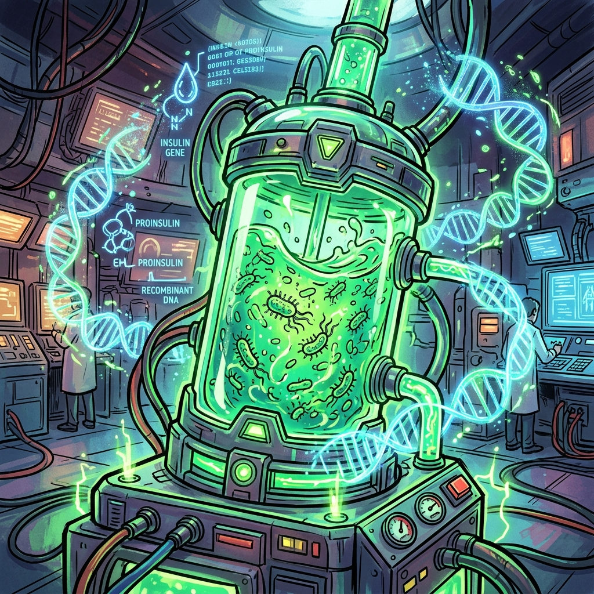
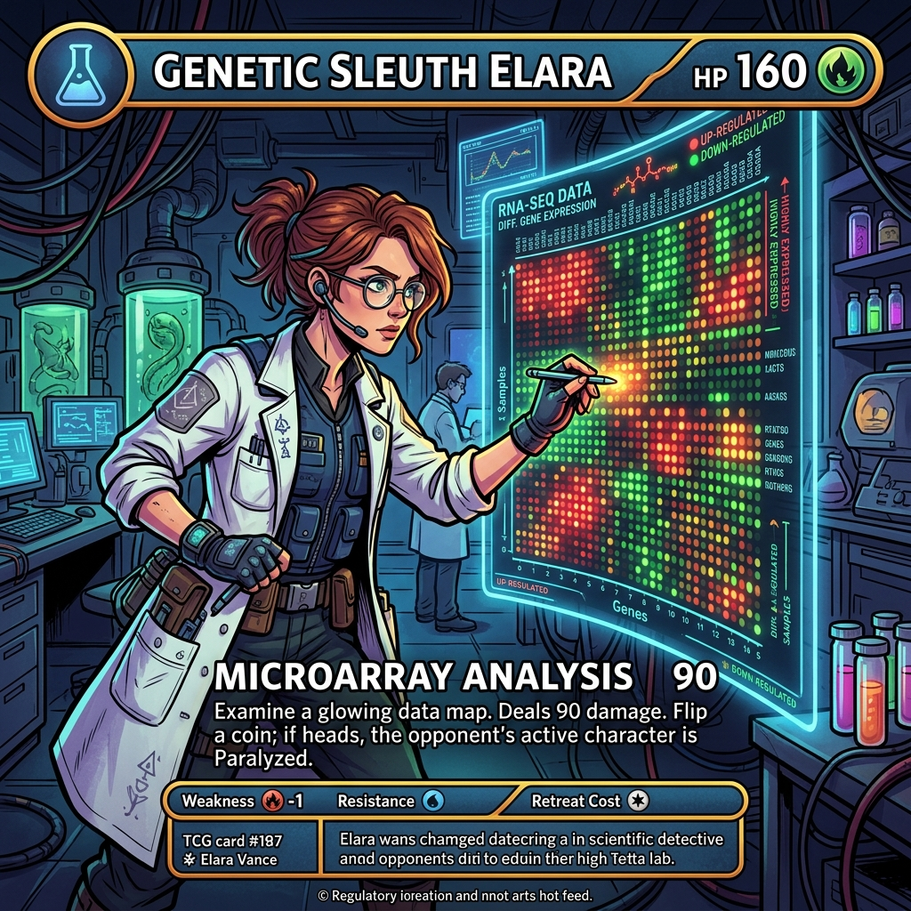
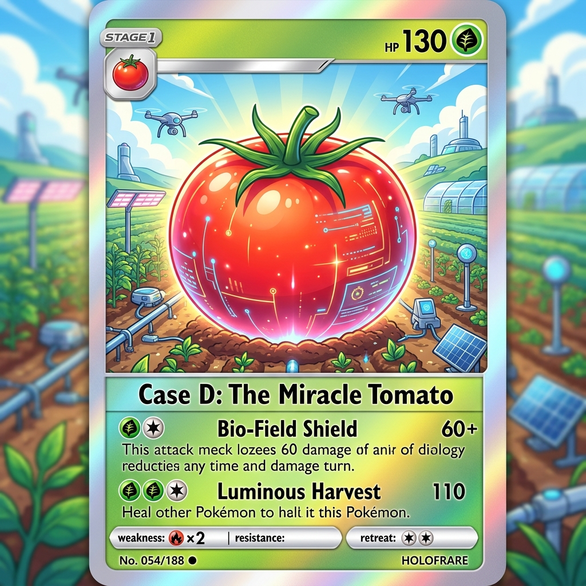
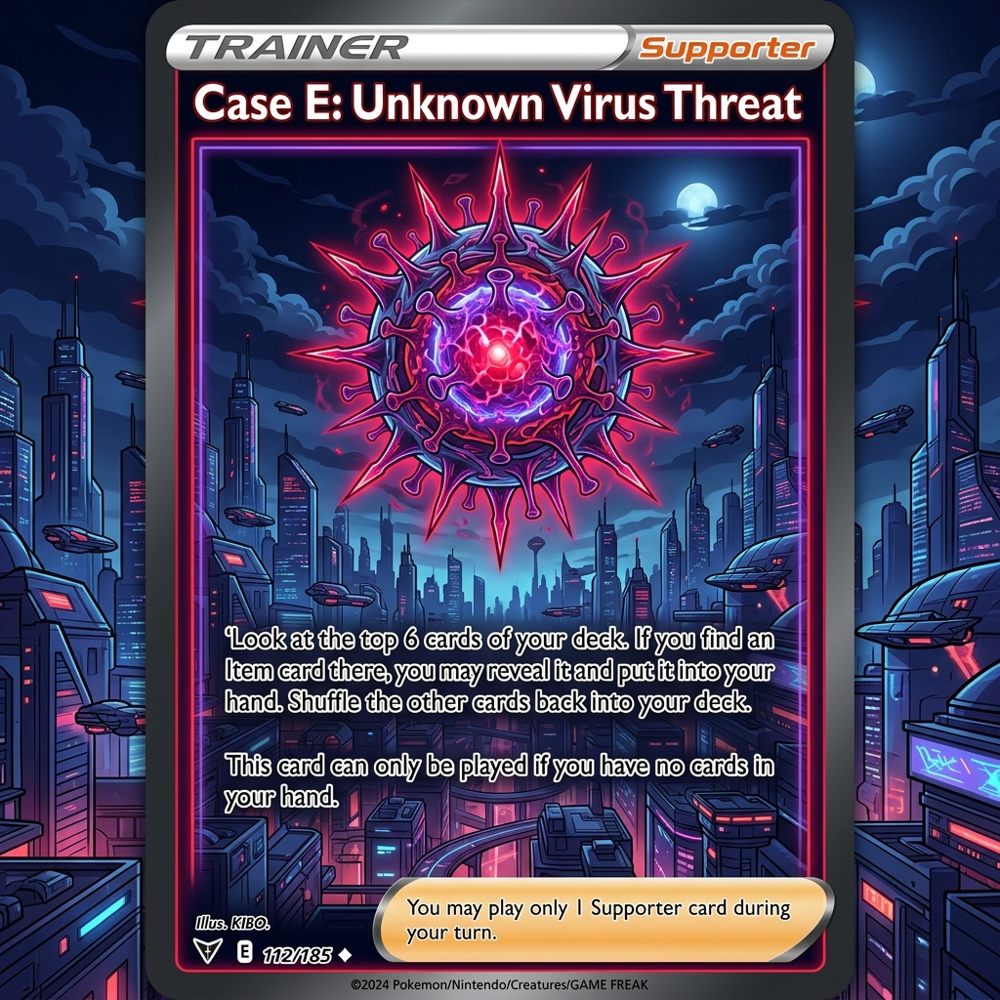
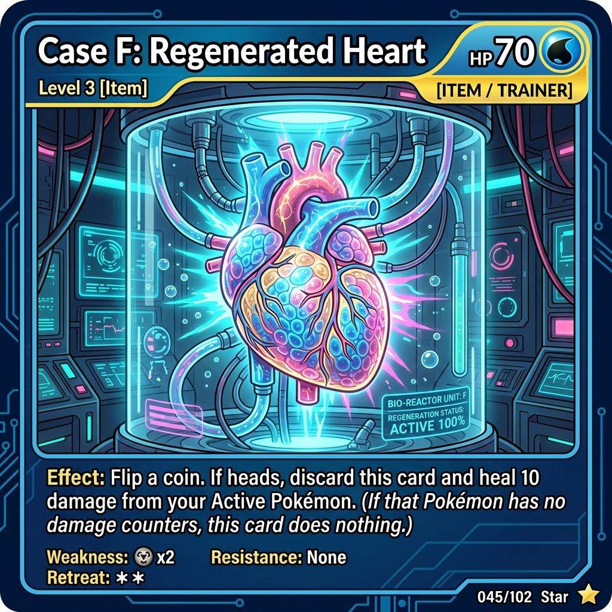

BIOTECH DETECTIVE
君は最先端のバイオ技術を操るエージェントだ。
目的と制約を見極め、最適な「技術ルート」を構築して事件を解決に導け。
担当する事件を選択せよ

ワイナリーのタンクから発見された未知の酵母。その正体を特定せよ。

糖尿病患者を救うため、大腸菌にヒトのインスリンを作らせる工場を稼働せよ。

ガン細胞で異常に働く未知の遺伝子を見つけ、その働きを証明せよ。

害虫に強い、夢のトマトを作れ！他の細菌から害虫に効く遺伝子を見つけ、トマトに組み込め。

街に未知のウイルスが広まりそうだ！遺伝子配列を解析し、mRNAワクチンを設計せよ。

心臓の病気で苦しむ患者を救え！拒絶反応を防ぐため、患者本人の細胞から心筋細胞を作り出せ。
技術カードをタップしてルートにセットせよ（最大3つ）